ANIKA MAKEUP
Salve ragazze.
Sono stata assente e me ne rendo conto che ho accantonato un pò tutto il lavoro svolto finora, ma non è un periodo positivo per il mio umore e allora sto cercando di riprendere i miei stimoli vanitosi ihihihUn paio di settimane fa mi ha bussato il corriere e mi ha recapitato una collaborazione che appena l'ho vista ho fatto gli occhi a cuoricino. Vi sto parlando di
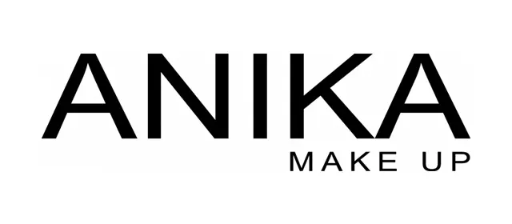
Subito vi mostro cosa contneeva il pacchetto:
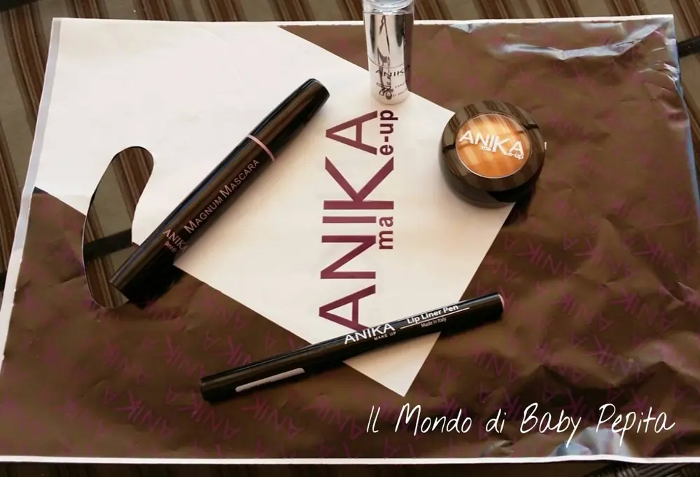
ombretto waterproof n. 9
mascara magnum volumizzante
lip liner pen 02 chocolate
rossetto 7 days tonalità OB20
Inizio col parlarvi dall'ombretto waterproof n. 9
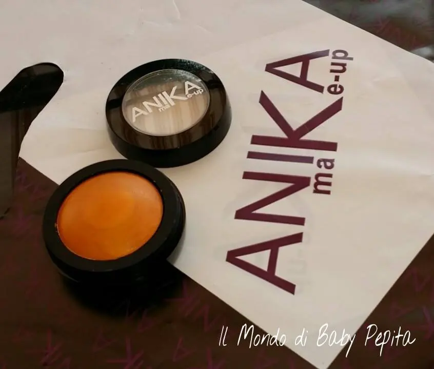
La descrizione del prodotto dice:
Ombretto in crema, facile da applicare e da sfumare. la sua consistenza morbida e setosa permette una copertura intensa e una lunga durata. disponibile in 16 tonalità, sia mat che perlate.
Allora, il packaging è molto bello, pratico da portare con sè e avendo anche la facciata trasparente è facile da riconoscere il colore .
L'ombretto è in una cialda di 7 gr di prodotto dalla consistenza setosa. Bello come colore che va dall'arancione al caramello a tratti sull'oro.
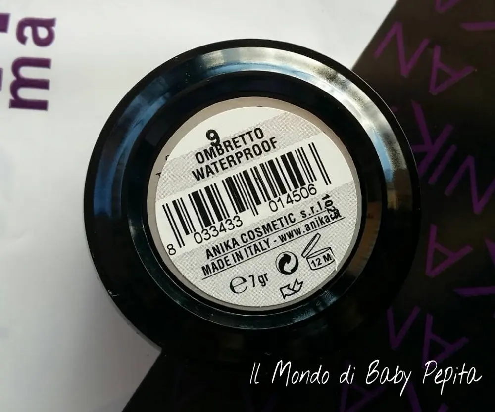
PAO dice 12 mesi.
La durata non posso dirvi che sia rimasta soddisfatta, essendo un prodotto waterproof quindi resistente all'acqua io mi aspetto che tenendolo tutto il giorno resti intatto, e invece oosì non è stato, ho sempre odiato gli ombretti a crema proprio per il fatto che dopo un tot di ore tutto il prodotto va a posarsi nelle pieghe dell'occhio e ahimè anche questo ha fatto la stessa e identica cosa.
Ho provato a sfumarlo anche con un ombretto in polvere così da creare un semplice smoky eye e unendo i due prodotti credevo di avere il risultato che temevo ma purtroppo così non è stato.
Come ore vi posso dire che su di me è durato tutto il pomeriggio sì, ma dopo 2-3 ore era già tutto nelle pieghette degli occhi.
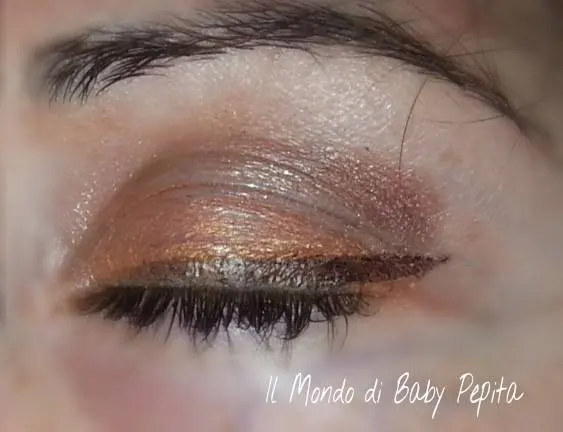
PREZZO DELL'OMBRETTO WATERPOOF 5.40 €
Passiamo al mascara magnum volumizzante
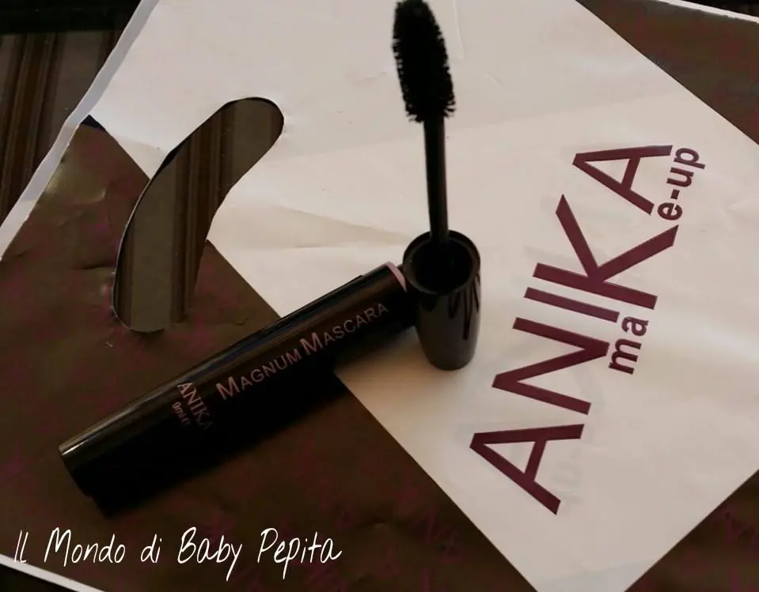
La descrizione dice:
Mascara nero extra volumizzante, astuccio da 9 ml. riveste le ciglia e dona un volume intenso.
Packaging:
INCI:
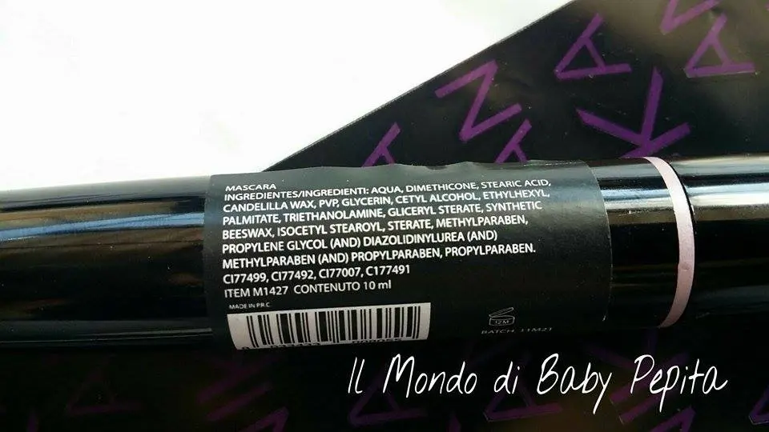
La durata è ottima, facile da applicare, colora che è una meraviglia le ciglia e dura tutto il giorno, quando vai a struccarti devi sciacquare per bene le ciglia prima che vada del tutto via, dunque fa il suo dovere.
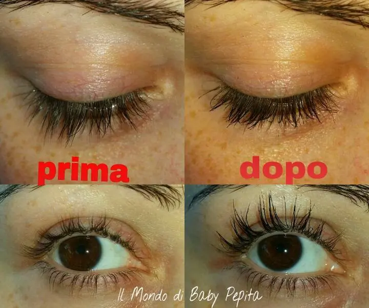
PREZZO DEL MASCARA: 4.90 €
Lip liner pen 02 chocolate
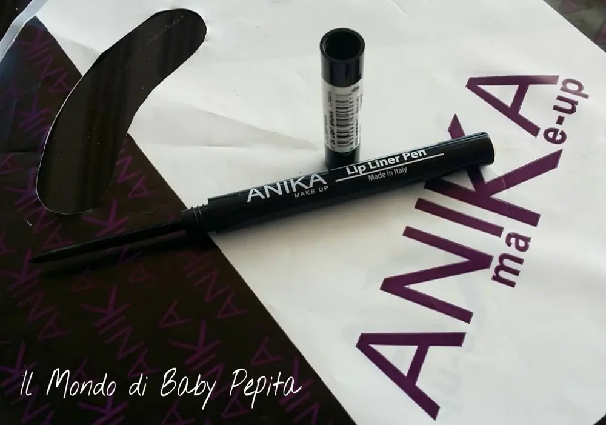
Packaging:
La lip liner pen si presenta in un tubicino a penna, che trae il prodotto però dal tappo e diventa una vera e propria penna.
E' una matita per definire il contorno labbra, ma vi dirò io l'ho usata come eyeliner per occhi.
Vi sembrerà strano ma a me è piaciuta tanto anche per la resistenza sugli occhi.
Un modo alternativo per usare prodotti ihihih
Ottima per le labbra mma anche per eyeliner occhi.
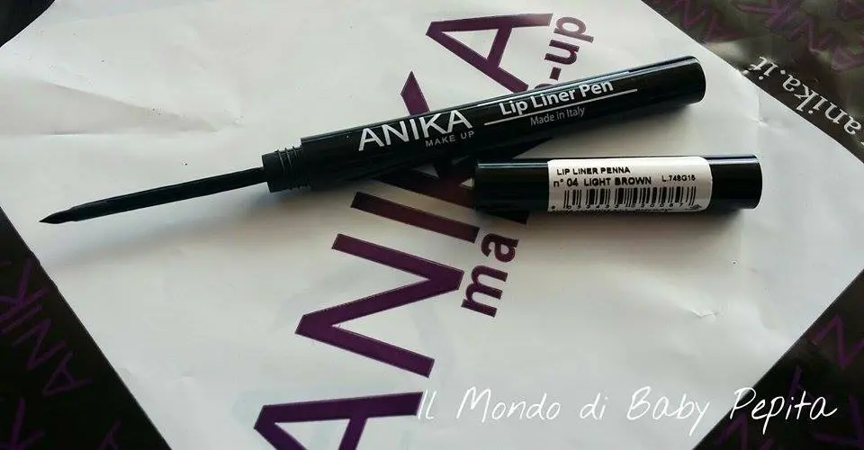
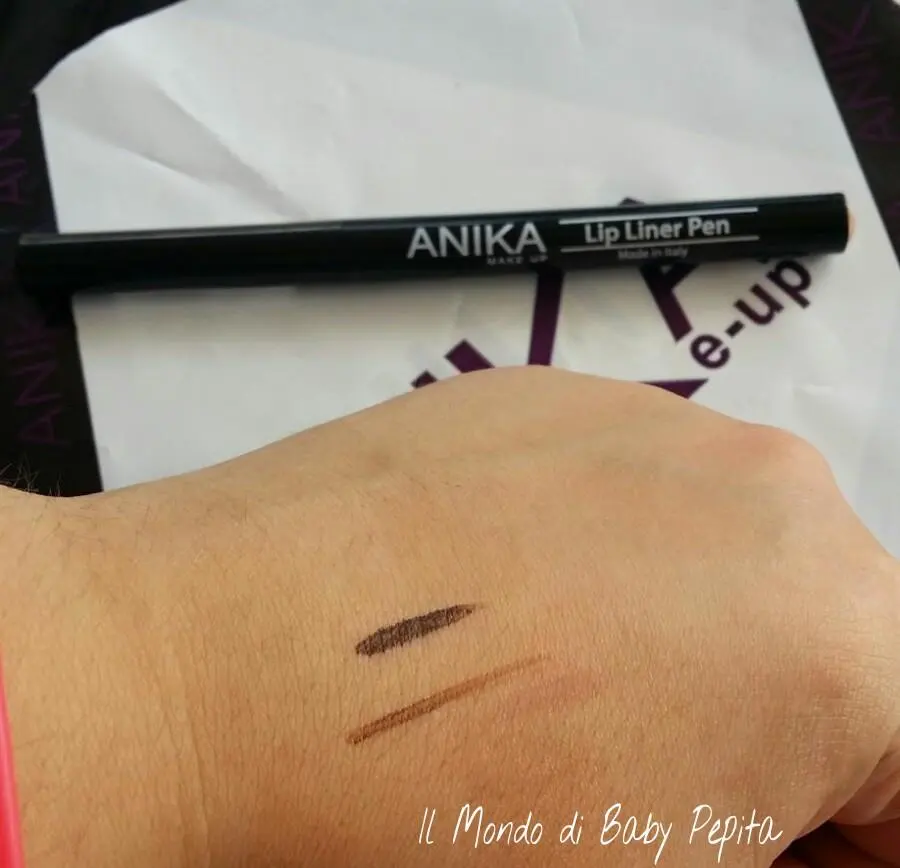
Proprio per il tratto sottile e non marcatissimo, come possiamo notare sulla mano in foto, sul primo tratto è stata fatta una doppia passata, ed è così che io l'hho utilizzata per gli occhi dando un tono marrone alla mia eyeliner. Sul secondo tratto,sempre sulla mano in foto, possiamo vedere che è molto chiara, adatta proprio ad un contornolabbra.
PAO 9 mesi
E per ultimo,a ma non per importanza, parliamo del rossetto 7 days tonalità OB20
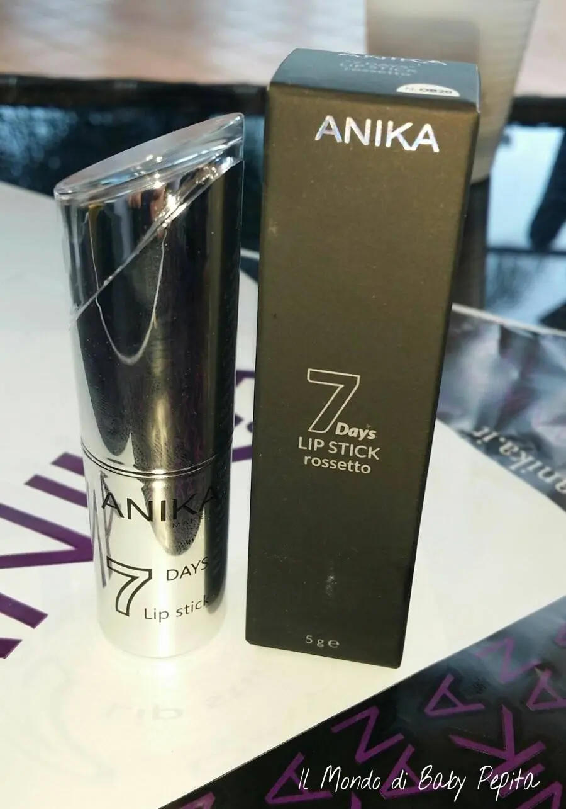
Packaging: color argento, con un piccolo specchietto sul cappuccio, quindi si pensa ad un rossetto da portare in borsetta.
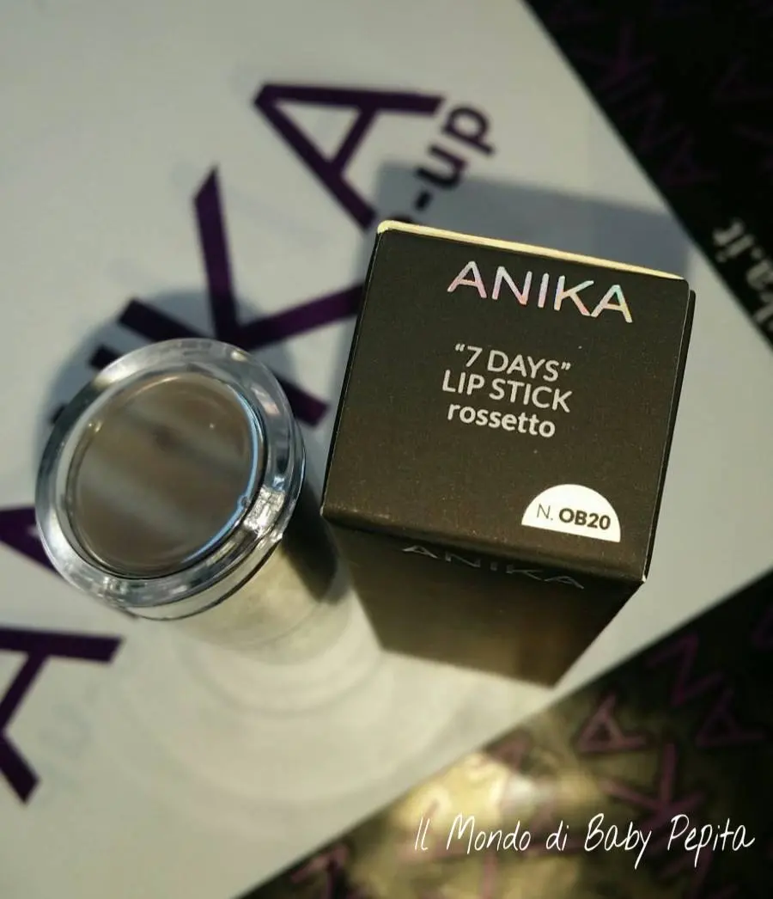
Colore: un bel cioccolato perlato a tratti brillantinato con texutura cremosa e confortevole.
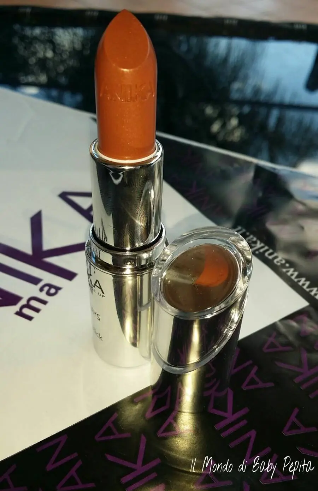
Per quanto mi capita di indossare colori marroni, questa tonalità di colore non mi ha del tutto entusiastamata, mi sento un pò più spenta quando lo indosso, forse perchè è molto su un marrone invernale.
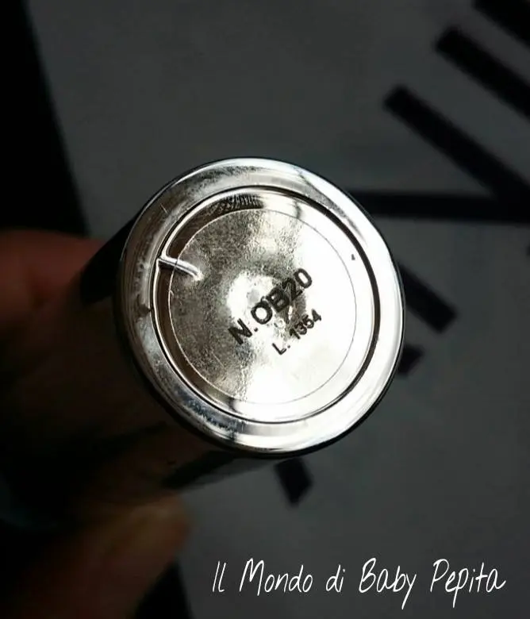
Vi mostro questo rossetto stavolta indossato sulle labbra di mia sorella, molto più carnose ahahah
L'ho indossato naturalmente anch'io e ho notato che è molto facile da stendere e molto ma molto cremoso.
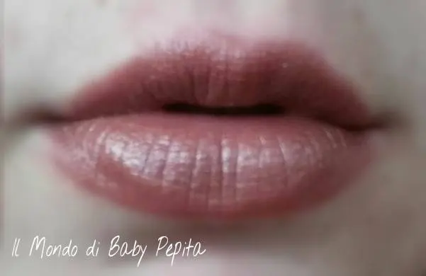
La durata del rossetto è buona, ovviamente non bisogna strapazzarlo e sottoporlo a prove come fumo, cibo e bevande perchè in quel caso andrà via anche se non del tutto. Io l'ho tenuto per tutto il pomeriggio e a cena era sbiadito. Quindi rossetto promosso.
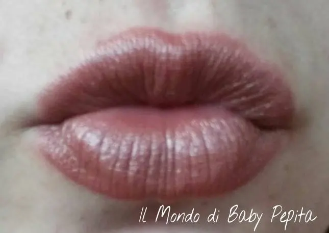
PAO di 12 mesi per 5 gr di prodotto.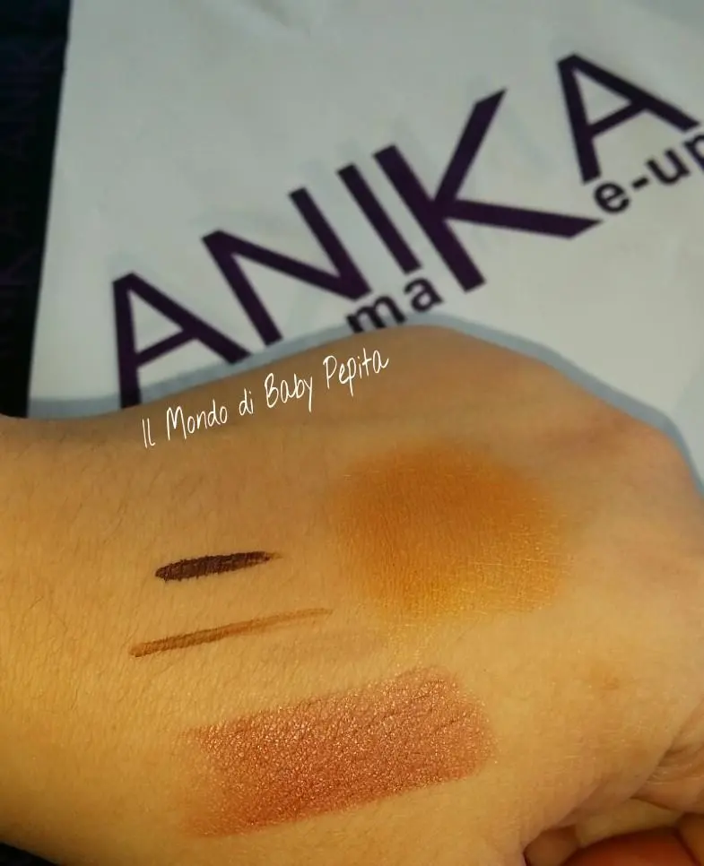
TUTTE LE SFUMATURE INSIEME.
Con questo è tutto, spero di esservi stata d'aito per i vostri acquisti, potrete trovare questi prodotti negli store ANIKA MAKEUPA oppure sul loro store online http://www.anika.it/
Questa è la loro pagina facebook: https://www.facebook.com/Anika-MakeUp-350660541652488/timeline/
Ringrazio l'azienda per avermi dato fiducia e che sia rimasta soddisfatta della mia recensione.
Alla prossima amiche